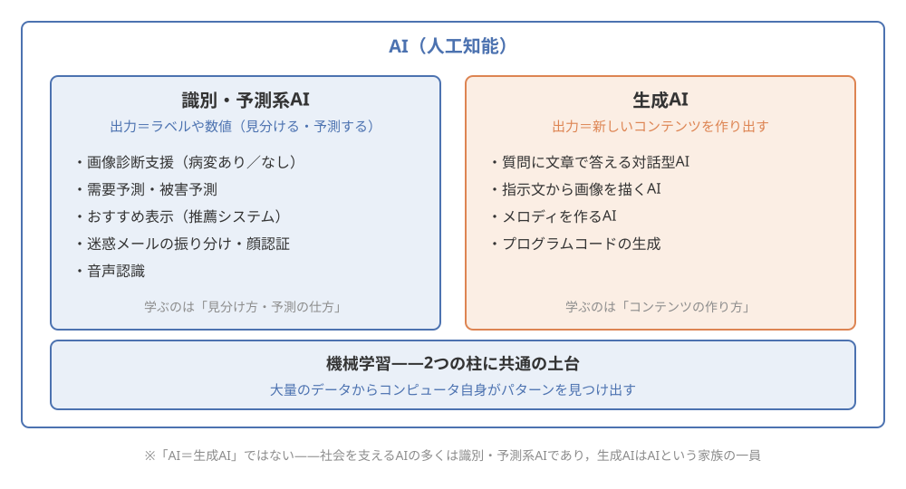
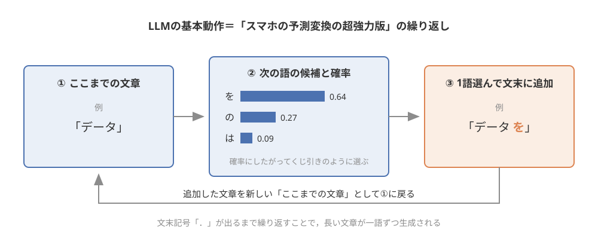
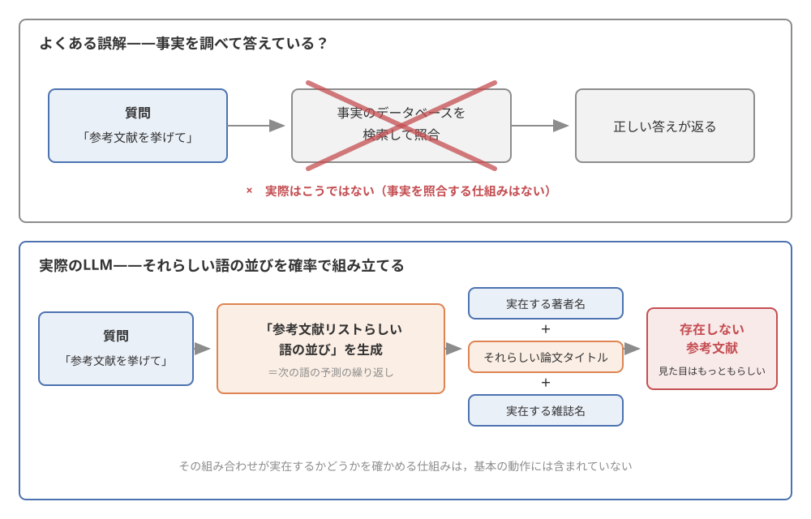
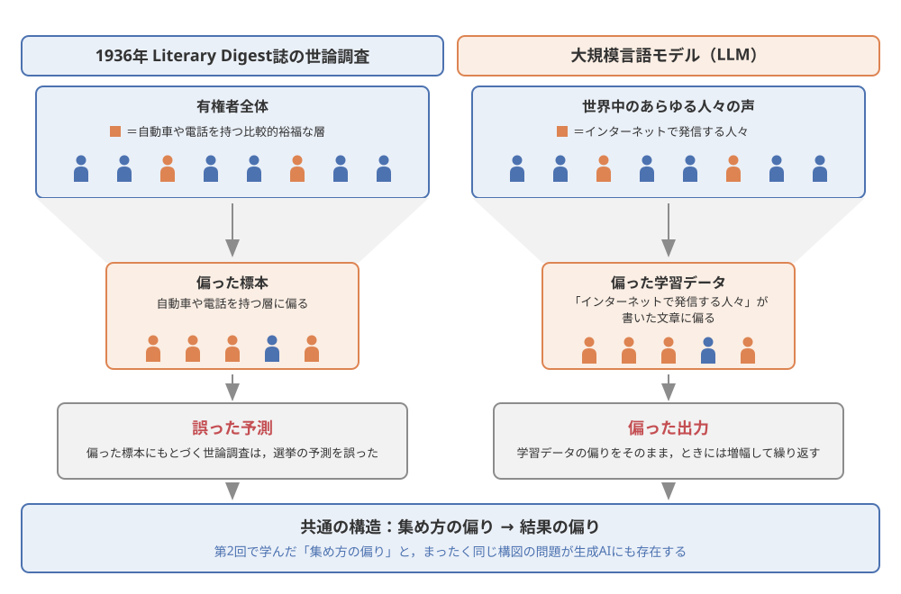
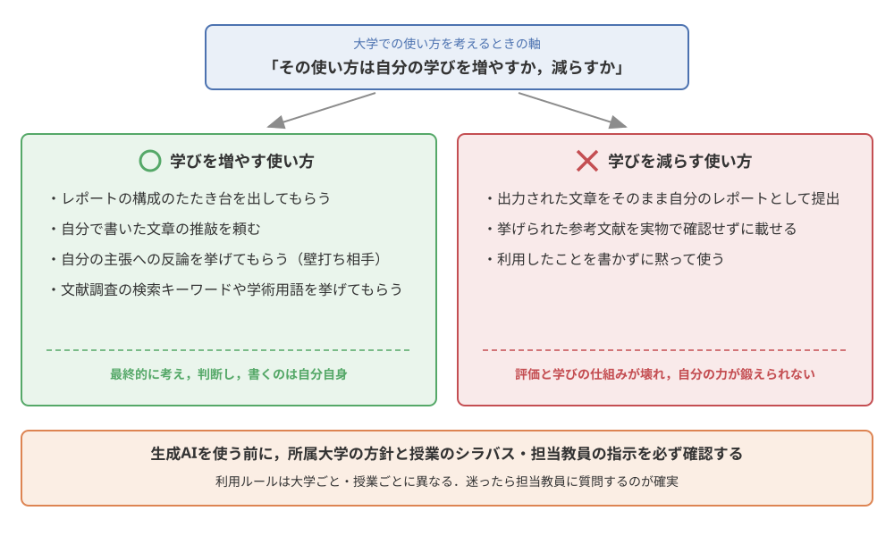

第8回：生成AIの基礎と知的活動への利用#
この回で学ぶこと#
AIの全体像（識別・予測系AIと生成AI）を整理し，「AI＝生成AI」ではないことを説明できるようになる
生成AIの中核である大規模言語モデル（LLM）の仕組みを，「次の語の予測」という考え方で直感的に説明できるようになる
生成AIにできること・できないこと（ハルシネーション・知識の鮮度・バイアス）を理解し，出力を批判的に確認する姿勢を身につける
大学での適切な生成AIの使い方（レポート作成支援・文献調査・アイデア出し）と，学術的誠実性の考え方を理解する
データサイエンスと生成AIの関係を整理し，本科目全体（データのライフサイクルと法）を振り返る
導入：その参考文献，本当に存在しますか？#
いよいよ最終回です．最終回のテーマは，みなさんにとってもっとも身近なデータサイエンスの話題かもしれない生成AIです．まずは，大学の授業で実際に起こりうる場面から考えてみましょう．
事例：AIが挙げた「存在しない論文」
ある大学1年生が，教養科目のレポート課題に取り組んでいました．締切が迫っていたため，対話型の生成AIサービス（ChatGPTなど）に「このテーマに関するレポートを書いて，参考文献も挙げてください」と頼んだところ，数分で，もっともらしい文章と，著者名・論文タイトル・雑誌名・年まで整った参考文献リストが出力されました．
ところが，提出前に念のため図書館のデータベースで参考文献を検索してみると，リストにあった論文のいくつかが，どこを探しても見つかりません．著者名は実在する研究者，雑誌名も実在する雑誌なのに，その組み合わせの論文は存在しなかったのです．つまり生成AIは，「それらしい参考文献」を作り出していました．
実は，生成AIが事実と異なる内容をもっともらしく出力してしまう現象は世界中で数多く報告されており，研究の世界でも大きな課題として盛んに研究されています．なぜこんなことが起こるのでしょうか．そして，こんな性質を持つ道具と，私たちはどう付き合えばよいのでしょうか．
この事例は，生成AIが「使えない道具」だということを意味しません．生成AIは，使い方しだいでみなさんの学びを大きく助けてくれる強力な道具です．しかし，強力な道具ほど，その仕組みと限界を知らずに使うと危険です．車の運転に交通ルールと車の特性の理解が必要なのと同じです．
この回では，まずAI全体の中での生成AIの位置づけを整理したうえで，生成AIの中身である大規模言語モデルの仕組みを「次の語の予測」というキーワードで直感的に理解します．そのうえで，生成AIにできること・できないことを押さえ，大学での適切な使い方を考えます．最後に，データサイエンスと生成AIの関係を整理して，本科目全体のまとめとします．
AIの全体像——「AI＝生成AI」ではない#
第1回で見たAIたちを思い出す#
「AI」と聞くと，いまでは多くの人がChatGPTのような対話型の生成AIを思い浮かべます．しかし，第1回「データサイエンスとは何か」で紹介した社会のAI・データ活用事例を思い出してみてください．
医療：レントゲンやCTの画像から病変の疑いがある箇所を見つける「画像診断支援」
防災：気象や地形のデータから災害の被害を予測する「被害予測」
マーケティング：ネットショッピングや動画サイトの「おすすめ表示（推薦システム）」
交通：電車やバス，タクシーの「需要予測」
これらはすべてAIの活用事例ですが，どれも文章や画像を「作り出す」AIではありません．画像診断支援は画像を「病変あり／なし」に見分けるAI，被害予測や需要予測は将来の数値を予測するAI，推薦システムは「この人はこの商品を好みそうだ」と予測するAIです．
このように，入力されたデータを分類したり，数値を予測したりするタイプのAIを，本講義では識別・予測系AIと呼ぶことにします．世の中で長く活躍してきたAIの多くは，この識別・予測系AIです．迷惑メールの自動振り分け，スマホの顔認証，音声認識なども識別・予測系AIの仲間です．
生成AIとは何か#
これに対して，生成AI（generative AI）は，文章・画像・音声・プログラムコードなどの新しいコンテンツを作り出す（生成する） タイプのAIです．質問に対して文章で答える対話型AI，指示文から画像を描くAI，メロディを作るAIなどがこれにあたります．
ここで大切なのは，識別・予測系AIと生成AIは対立するものではなく，どちらも「データから学ぶ」という共通の土台（機械学習）の上に立っているということです．第5回で機械学習の入口として学んだように，機械学習とは，人間がルールを一つひとつ書き込むのではなく，大量のデータからコンピュータ自身がパターンを見つけ出す方法でした．識別・予測系AIはデータから「見分け方・予測の仕方」のパターンを学び，生成AIはデータから「コンテンツの作り方」のパターンを学びます．違うのは出力の形であって，データから学ぶという原理は共通なのです．
ここまでのAIの全体像を 図 38 に整理します．第1回で見た活用事例が，この図のどこに位置づくかを確かめてみてください．

図 38 AIの全体像——識別・予測系AIと生成AIは，どちらも機械学習という共通の土台の上に立つ#
警告
ニュースや日常会話では「AI」という言葉が生成AIだけを指して使われることが増えていますが，AI＝生成AIではありません．社会を支えているAIの多くは識別・予測系AIであり，生成AIはAIという大きな家族の中の（急成長中の）一員です．「AIを使った」という話を聞いたら，「それは何かを見分ける・予測するAIなのか，何かを作り出すAIなのか」を区別して考える習慣をつけましょう．
では，生成AI，特に文章を生成するAIは，どうやって「新しい文章」を作り出しているのでしょうか．次の節で，その心臓部をのぞいてみます．
大規模言語モデルの仕組み——「次の語の予測」#
スマホの予測変換から考える#
文章を生成するAIの中身は，大規模言語モデル（Large Language Model; LLM）と呼ばれるモデルです．「モデル」という言葉は難しく聞こえますが，ここでは「データから学んだパターンのかたまり」くらいに考えてください．
LLMの仕組みを直感的に理解する鍵は，みなさんが毎日使っているスマホの予測変換にあります．スマホで「おはよう」と打つと，次の候補として「ございます」が上位に出てきます．「明日の」と打てば「予定」「天気」などが出てきます．これは，スマホが「『おはよう』の後には『ございます』が続くことが多い」という言葉のつながりのパターンを知っているからです．
LLMがやっていることは，本質的にはこの予測変換の超強力版です．すなわち，LLMの基本動作は，ここまでの文章に続く「次の語」を確率的に予測することです．これを本講義では次の語の予測と呼びます．たとえば「吾輩は猫で」という文章が与えられたら，次に来る語として「ある」に高い確率を，「いる」「す」などにより低い確率を割り当てる，という具合です．そして，予測した語を文章の末尾に付け足し，また次の語を予測する——これを何度も繰り返すことで，長い文章が一語ずつ生成されていきます．対話型の生成AIがすらすらと答えを「書いている」ように見えるのは，この「次の語の予測」を高速に繰り返している姿なのです．この繰り返しの様子を 図 39 に示します．

図 39 「次の語の予測」の繰り返しで文章が生成される様子（候補と確率の数値は，この後の節で作るミニモデルの「データ」に続く語の例）#
では，LLMはこの「言葉のつながりのパターン」をどこから学んだのでしょうか．答えは学習データです．LLMは，ウェブページ・書籍・記事など，人間がこれまでに書いた膨大な量の文章を学習データとして読み込み，「どんな文脈の後にどんな語が続きやすいか」というパターンを統計的に学習しています．つまりLLMの賢さの源は，人間が書き溜めてきた文章の巨大な集まりなのです．この「学習データから学ぶ」という点は，あとで見る生成AIの弱点（知識の鮮度・バイアス）にも直結するので，覚えておいてください．
小さなコーパスで「次の語の予測」を体験する#
「次の語の予測」がどういうものか，実際にごく小さな仕組みを作って確かめてみましょう．ここでは，本物のLLMの代わりに，わずか24文の小さな日本語の文章集（コーパスと呼びます）を使います．やることは単純で，コーパスの中で「ある語の直後にどの語が何回現れたか」を数えるだけです．
まず，準備として使用するライブラリを読み込みます．
次に，小さなコーパスを用意します．コンピュータで扱いやすいように，各文はあらかじめ単語ごとにスペースで区切ってあります（文の終わりには「．」を付けています）．
# 小さな日本語コーパス（自作の24文．単語ごとにスペースで区切ってある）
corpus = [
"私 は 大学 で データサイエンス を 学ぶ ．",
"私 は 図書館 で レポート を 書く ．",
"私 は スマホ で 動画 を 見る ．",
"私 は カフェ で 課題 を する ．",
"私 は 電車 で 音楽 を 聴く ．",
"私 は 大学 で 友達 と 話す ．",
"学生 は 大学 で 統計学 を 学ぶ ．",
"学生 は 図書館 で 本 を 読む ．",
"学生 は スマホ で ニュース を 読む ．",
"先生 は 大学 で 講義 を する ．",
"データ は 社会 を 変える ．",
"データ を 集める ．",
"データ を 分析 する ．",
"データ を 可視化 する ．",
"データ を 保存 する ．",
"データ の 前処理 は 大切 だ ．",
"データ の 分析 は 面白い ．",
"データ の 可視化 は 大切 だ ．",
"大学 で データ を 学ぶ ．",
"AI は データ を 学習 する ．",
"AI は 文章 を 生成 する ．",
"AI は 社会 を 変える ．",
"生成AI は 次 の 語 を 予測 する ．",
"モデル は 大量 の データ を 学習 する ．",
]
# コーパス中の「直前の語 → 次の語」のペアをすべて取り出す
pairs = []
for sentence in corpus:
words = sentence.split() # スペースで区切って単語のリストにする
for i in range(len(words) - 1):
pairs.append((words[i], words[i + 1]))
# ペアの一覧を表（データフレーム）にする
df = pd.DataFrame(pairs, columns=["直前の語", "次の語"])
print(f"ペアの総数：{len(df)}")
df.head()
ペアの総数：145
| 直前の語 | 次の語 | |
|---|---|---|
| 0 | 私 | は |
| 1 | は | 大学 |
| 2 | 大学 | で |
| 3 | で | データサイエンス |
| 4 | データサイエンス | を |
これで，「直前の語 → 次の語」のペアの一覧表ができました．あとは，ある語の直後にどの語が何回現れたかを数え，割合（確率）に直すだけで，ミニ版の「次の語の予測」ができあがります．
def next_word_table(word):
"""指定した語の直後に現れる語を数え，出現回数と確率の表を返す"""
counts = df[df["直前の語"] == word]["次の語"].value_counts()
table = pd.DataFrame({
"出現回数": counts,
"確率": (counts / counts.sum()).round(2),
})
return table
# 「データ」の次に来る語の予測
next_word_table("データ")
| 出現回数 | 確率 | |
|---|---|---|
| 次の語 | ||
| を | 7 | 0.64 |
| の | 3 | 0.27 |
| は | 1 | 0.09 |
このコーパスでは，「データ」の直後には「を」がもっとも多く現れ，次いで「の」「は」が続いています．つまりこのミニモデルは，「データ」の次の語として「を」を約6割の確率で予測します．「私」ではどうでしょうか．
# 「私」の次に来る語の予測
next_word_table("私")
| 出現回数 | 確率 | |
|---|---|---|
| 次の語 | ||
| は | 6 | 1.0 |
コーパス中で「私」の後には必ず「は」が来ていたので，「は」が確率1.0で予測されます．これが「次の語の予測」の正体です．過去の文章の中で，その語の後にどの語がどれくらいの割合で続いたかを数えているだけなのです．
予測を繰り返して文を作ってみる#
次に，この予測を繰り返して文を生成してみましょう．やり方は単純で，最初の語を与えたら，予測された確率にしたがって次の語をくじ引きのように選び，選んだ語を末尾に付け足して，また次の語を選ぶ——これを文末記号「．」が出るまで繰り返します．
rng = np.random.default_rng(1) # 乱数のもと（結果を再現できるよう固定）
def generate_sentence(start, max_len=15):
"""startから始めて，「次の語の予測」を繰り返して文を生成する"""
words = [start]
current = start
for _ in range(max_len):
candidates = df[df["直前の語"] == current]["次の語"]
if len(candidates) == 0: # 続く語がなければ終了
break
counts = candidates.value_counts()
probs = (counts / counts.sum()).to_numpy()
current = rng.choice(counts.index.to_numpy(), p=probs) # 確率に従い抽選
if current == "．": # 文末記号が出たら終了
break
words.append(current)
return " ".join(words)
# 「私」「データ」「AI」から始めて文を生成してみる
for start in ["私", "データ", "AI"]:
print(generate_sentence(start))
私 は 大量 の データ を 変える
データ を 学習 する
AI は スマホ で 課題 を 学ぶ
生成された文をよく見てください．たとえば1つ目の「私 は 大量 の データ を 変える」という文は，元の24文のどこにも存在しません．「私 は」「は 大量」「大量 の」「データ を」「を 変える」という，別々の文から学ばれた語のつながりが，くじ引きでつなぎ合わされて生まれた新しい文なのです．3つ目の「AI は スマホ で 課題 を 学ぶ」も同様です．これはまさに，生成AIが「学習データにない新しい文章」を作り出す様子の超ミニチュア版です．
同時に，この仕組みの危うさも見えてきます．「私 は 大量 の データ を 変える」は，語のつながりとしてはそれらしいのに，意味を考えるとどこか変な文です．それもそのはずで，このミニモデルは文の意味をまったく理解しておらず，ただ「つながりやすい語」を数えて選んでいるだけだからです．意味の通る文も，意味の怪しい文も，同じ仕組みから同じ顔をして生成されます．この点は，次の節で見るハルシネーションの理解に直結します．
本物のLLMとこのミニモデルの違いは，主に規模と洗練度です．このミニモデルは直前の1語だけを手がかりにしましたが，LLMは何千語にもおよぶ長い文脈全体を手がかりに次の語を予測します．また，学習データは24文ではなく，ウェブや書籍から集めた膨大な文章です．しかし，「過去の文章から言葉のつながりのパターンを学び，次の語を確率的に予測する」という原理そのものは共通です．この直感を持っておくだけで，生成AIの得意・不得意がぐっと理解しやすくなります．
発展：Transformer——LLMを支える仕組み
現在のLLMの多くは，Transformer（トランスフォーマー）と呼ばれる仕組みをもとに作られています [Vaswani and others, 2017]．Transformerは2017年に提案されたニューラルネットワークの構造で，「文章の中のどの語に注目すべきか」を自動的に判断する仕組み（自己注意機構，self-attention）を持ち，長い文脈を効率よく扱えることが特長です．ChatGPTの「GPT」の「T」はTransformerの頭文字です．本講義では名前の紹介にとどめますが，興味のある人は章末の文献を参照してください．
生成AIにできること・できないこと#
仕組みが分かったところで，生成AIの得意・不得意を整理しましょう．道具の限界を知ることは，道具を責めるためではなく，上手に使うためです．
得意なこと：言葉のパターン処理#
LLMは「言葉のつながりのパターン」の達人ですから，パターンの変換や再構成で解決できる作業が得意です．たとえば次のような作業です．
要約：長い文章の要点を短くまとめる
言い換え・推敲：文章をより自然に，より丁寧に書き直す
翻訳：ある言語の文章を別の言語に置き換える
たたき台の作成：文章の構成案や下書き，アイデアの候補を素早く大量に出す
説明の調整：難しい説明を「高校生にも分かるように」かみくだく
これらはいずれも，みなさんの学習やレポート作成を助けてくれる場面が多い機能です．具体的な活用方法は次の節で扱います．
ハルシネーション——もっともらしい誤り#
一方で，冒頭の事例で見たように，生成AIは事実と異なる内容を，もっともらしい自然な文章で出力してしまうことがあります．この現象をハルシネーション（hallucination，幻覚）と呼びます [Ji and others, 2023]．存在しない論文や書籍を挙げる，実在の人物に架空の経歴を付け加える，誤った統計の数値を自信満々に示す，といった形で現れます．
なぜハルシネーションが起こるのでしょうか．ここで「次の語の予測」の直感が役に立ちます．LLMは，事実のデータベースを調べて答えているのではなく，「この文脈ならこういう語が続きそうだ」という確率にもとづいて文章を組み立てています．参考文献を求められれば，「参考文献リストらしい語の並び」——実在しそうな著者名，それらしい論文タイトル，実在する雑誌名——を生成することはできますが，その組み合わせが実在するかどうかを確かめる仕組みは，基本の動作には含まれていません．つまりハルシネーションは，バグや故障というより，「もっともらしい文章を作る」という仕組みそのものの副作用なのです [Huang and others, 2025]．冒頭の事例で「存在しない参考文献」ができあがった仕組みを，よくある誤解と対比して 図 40 に示します．

図 40 ハルシネーションが起こる仕組み——事実の照合ではなく，それらしい語の並びの確率的な組み立て#
警告
ハルシネーションのやっかいな点は，間違いが間違いらしい顔をしていないことです．人間が書いた不正確な文章は，どこかたどたどしくなることが多いのに対し，生成AIの誤りは流ちょうで自信に満ちた文章で出力されます．「文章がしっかりしているから内容も正しいだろう」という判断は，生成AIの出力には通用しません．事実に関わる内容（数値・固有名詞・出典など）は，必ず信頼できる情報源で確認することを習慣にしてください．
知識の鮮度——「いつまでの知識か」#
LLMの知識の源は学習データでした．ここから，もう一つの限界が生まれます．学習データはある時点までに集められた文章ですから，LLMが持っている知識にも「賞味期限」のような区切りがあります．これを本講義では知識の鮮度の問題と呼びます．
たとえば，学習データの収集後に起こったニュース，改正された制度や法律，新しく発表された研究成果などについて，LLMはそのままでは知りません．知らないだけならまだよいのですが，ハルシネーションと組み合わさると，古い知識をもとに，さも最新の事実であるかのような答えを生成してしまうことがあります．最新の情報や，時間とともに変わる情報（制度・価格・担当者・締切など）を調べる用途では，生成AIの答えを鵜呑みにせず，公式サイトなどの一次情報を確認する必要があります．
学習データに由来するバイアス#
第2回で，データの「集め方」が結果を歪めることを学びました．1936年のLiterary Digest誌の世論調査は，偏った標本から誤った予測を導いてしまいました．実は，まったく同じ構図の問題が生成AIにも存在します．
LLMの学習データは，ウェブや書籍など人間が書いた文章の集まりです．そこには，人間社会が持つ偏見や固定観念（バイアス，bias） も一緒に書き込まれています．たとえば特定の職業と性別を結びつける表現，特定の集団に対する否定的な表現などが学習データに多く含まれていれば，LLMはそのパターンも「言葉のつながり」として学習し，出力に再現してしまいます．また，ウェブ上の文章は，そもそも「インターネットで発信する人々」が書いたものに偏っており，世界中のあらゆる人々の声を均等に反映しているわけではありません．1936年の世論調査と生成AIが「集め方の偏り→結果の偏り」という同じ構造を持つことを，図 41 で確かめてください．

図 41 Literary Digest誌の世論調査と大規模言語モデルの同型対比——どちらも「集め方の偏り」が「結果の偏り」を生む#
この問題を早くから指摘した研究者たちは，LLMを「確率的なオウム（stochastic parrots）」にたとえました [Bender et al., 2021]．オウムが言葉の意味を理解せずに人間の発話をまねるように，LLMは意味を理解しないまま，学習データの中の言葉のパターンを統計的に模倣しているにすぎない——だからこそ，学習データに含まれる偏りをそのまま，ときには増幅して繰り返してしまう，という批判的な視座です．LLMが本当に「理解していない」と言い切れるかについては研究者の間でも議論が続いていますが，生成AIの出力は中立でも公平でもなく，学習データの偏りを引き継いでいるという指摘は，利用者として必ず心に留めておくべき点です．第7回で学んだアルゴリズムの公平性の問題は，生成AIの時代にますます重要になっているのです．
大学での生成AIとの付き合い方#
仕組みと限界を押さえたところで，いよいよ本題です．大学での学びの中で，生成AIをどう使えばよいのでしょうか．
プロンプトの基本——指示は具体的に#
生成AIへの指示や質問の文章をプロンプト（prompt）と呼びます．LLMは「ここまでの文脈」をもとに次の語を予測するのですから，文脈＝プロンプトが具体的であるほど，目的に合った出力が得られやすくなります．難しいテクニックを覚える必要はありません．人に仕事を頼むときと同じで，次のような点を意識するだけで結果は大きく変わります．
目的を伝える：「レポートの構成を考えたい」「概念の意味を確認したい」など，何のための出力かを書く
条件を具体的に：「大学1年生向けに」「300字程度で」「箇条書きで」など，形式や水準を指定する
前提や資料を与える：自分の書いた下書きや要約したい文章など，判断材料をプロンプトに含める
一度で終わらせない：出力に対して「ここをもっと詳しく」「別の案を」と対話を重ねて絞り込む
たとえば「経済について教えて」と聞くより，「大学1年生です．レポートで地域経済の課題を扱います．テーマの候補を，身近なデータで調べられそうなものに絞って5つ挙げてください」と聞く方が，はるかに役に立つ答えが返ってきます．
適切な使い方の例——学びを増やす使い方#
大学での生成AIの使い方を考えるときの軸は，「その使い方は自分の学びを増やすか，減らすか」 です．教育分野の研究では，生成AIは使い方しだいで学習を強力に支援しうることが報告されています [Kasneci and others, 2023]．学びを増やす方向の使い方の例を挙げます．
レポート作成支援：レポートの構成のたたき台を出してもらう，自分で書いた文章の推敲（誤字脱字・分かりにくい表現の指摘）を頼む，自分の主張への反論を挙げてもらって議論を鍛える．いずれも「書くのは自分，AIは壁打ち相手」という使い方です
文献調査：テーマに関連する検索キーワードや学術用語を挙げてもらう，見つけた論文の英語の要旨をかみくだいて説明してもらう．ただし，冒頭の事例のとおり，生成AIが挙げた文献は実在しないことがあるため，必ず図書館のデータベースや学術検索サービスで実物を確認します
アイデア出し：テーマの候補や切り口を大量に挙げてもらい，そこから自分で選び，自分で深める
学習の伴走：授業で分からなかった概念を「例え話で説明して」と頼む，語学学習で英作文の添削や会話練習の相手をしてもらう
これらに共通するのは，最終的に考え，判断し，書くのは自分自身であり，生成AIはそのための材料や刺激を提供する道具だ，という関係です．学びを増やす使い方と，逆に学びを減らしてしまう使い方の対比を 図 42 に整理します．

図 42 生成AIの「学びを増やす使い方」と「学びを減らす使い方」——判断の軸は，自分の学びを増やすかどうか#
学術的誠実性——なぜ「丸写し」がいけないのか#
一方で，生成AIが出力した文章をそのまま自分のレポートとして提出するのは，まったく別の話です．ここで関わるのが学術的誠実性（academic integrity）という考え方です．学術的誠実性とは，学問の世界での正直さのルール，すなわち自分の成果と他者（他のもの）の成果を明確に区別し，他者の成果を使うときは出典を示すという原則です．他人の文章を出典を示さずに写す行為（剽窃）が不正とされるのと同じ理由で，生成AIの出力を自分が書いたものとして提出することは，多くの大学で不正行為にあたりうるとされています．
「AIの文章なら誰の著作でもないから写してもよいのでは？」と思うかもしれません．しかし問題の本質は，著作権よりもむしろ評価と学びの仕組みが壊れることにあります．レポート課題は，みなさんが自分で調べ，考え，文章にまとめる力を鍛えるための訓練です．その過程を生成AIに丸投げすれば，成績評価は実力を反映しないものになり，何より鍛えられるはずだった自分の力が鍛えられません．研究の世界でも，生成AIの利用を透明にすること（どう使ったかを明示すること）や，最終的な責任は人間の著者が負うことが，国際的な原則として確認されつつあります [van Dis et al., 2023]．教育の場でも，禁止一辺倒ではなく，適切な使い方を学生が身につけられるようにルールと指導を整えるべきだという議論が進んでいます [Kasneci and others, 2023]．
警告
生成AIの利用ルールは，大学ごと・授業ごとに異なります．同じ大学でも，「構成の相談はよいが文章生成は不可」「利用した場合は明記せよ」「一切不可」など，授業の目的に応じて方針はさまざまです．レポートや課題で生成AIを使う前に，所属大学の方針と，その授業のシラバス・担当教員の指示を必ず確認してください．本章で述べたのはあくまで一般的な考え方であり，個々の授業でのルールに置き換わるものではありません．迷ったら担当教員に質問するのが確実です．
生成AI検索と情報アクセスの変容#
最後に，少し視野を広げておきます．従来，インターネットで調べ物をするといえば，検索エンジンにキーワードを入れ，表示されたリンクの一覧から自分でページを選んで読む，という流れでした．近年は，検索エンジンにも生成AIが組み込まれ，質問に対して要約された「答え」そのものが直接生成されて表示されるようになりつつあります．これを生成AI検索と呼びます．
これは，リンクの一覧から自分で情報を選び読み比べるスタイルから，AIがまとめた答えを受け取るスタイルへの，情報アクセスの変容といえます．便利になる一方で，答えの根拠がどのページにあるのか，要約の過程で情報が歪んでいないか，ハルシネーションが混ざっていないかが見えにくくなる，という新しい課題も生まれています．どちらのスタイルで調べるにせよ，出典（一次情報）にさかのぼって確かめるという本科目で繰り返し強調してきた姿勢は，むしろこれまで以上に重要になっています．
活用事例：教育の現場に入り始めた生成AI#
事例：学びを支える道具としての生成AI
生成AIの社会での活用が特に議論されている分野の一つが，みなさんの足元でもある教育です．教育研究の分野では，LLMが教育にもたらす機会と課題を整理する研究が進んでいます [Kasneci and others, 2023]．
機会の側面としては，学習者一人ひとりの理解度や進度に合わせて説明や練習問題を変える個別最適化された学習支援，24時間いつでも質問できる相手としての利用，外国語の作文添削や会話練習といった語学学習への応用，さらに教員側でも教材や小テストの下書き作成の支援などが挙げられています．家庭の事情などで塾や個別指導を受けにくい学習者にも学習支援を届けられる可能性がある，という公平性の観点からの期待もあります．
一方，課題の側面としては，本章で学んだとおり，出力の誤り（ハルシネーション）を学習者が見抜けないリスク，学習データ由来のバイアス，そして課題の丸投げによる学術的誠実性の問題や，考える力が育たなくなる懸念が指摘されています．研究者たちの結論は明快で，問題は「使うか，禁止するか」ではなく「どう使う力を育てるか」 である，というものです．道具の仕組みと限界を理解したうえで使いこなすリテラシー——まさに本章で学んできたこと——が，教員にも学生にも求められているのです．
まとめ#
この回では，生成AIの基礎と，大学での知的活動への利用について学びました．要点を振り返ります．
AIには，データを分類・予測する識別・予測系AIと，新しいコンテンツを作り出す生成AIがあり，「AI＝生成AI」ではない．どちらもデータから学ぶ機械学習という共通の土台の上にある
文章生成AIの中身は大規模言語モデル（LLM） であり，その基本動作は膨大な学習データから学んだパターンにもとづく次の語の予測の繰り返しである
LLMは事実を照合しているわけではないため，もっともらしい誤り（ハルシネーション）を出力しうる．また，知識の鮮度に限界があり，学習データに由来するバイアスを引き継ぐ．「意味を理解せず統計的に模倣しているだけ」という批判的視座も提起されている
生成AIへの指示（プロンプト）は，目的・条件・前提を具体的に伝えるほど役に立つ
大学では，レポートの壁打ち・推敲，文献調査の入口，アイデア出しなど自分の学びを増やす使い方が適切であり，出力の丸写し提出は学術的誠実性に反しうる．所属大学・各授業のルールを必ず確認すること
科目全体の総括——データサイエンスと生成AI#
最後に，本科目全体を振り返って締めくくりましょう．本科目では，データが価値を生むまでの流れ（データのライフサイクル）に沿って，収集（第2回）→保存・検索（第3回）→前処理（第4回）→分析（第5回）→可視化（第6回）を順にたどり，横断的なテーマとしてデータと法（第7回）を学びました．
実は，本章で学んだ生成AIは，このライフサイクル全体の巨大な実例でもあります．LLMは，ウェブや書籍から膨大な文章を収集し，保存し，学習に適した形に前処理し，統計的なパターンを学習（分析） した成果物です．だからこそ，第2回で学んだ「集め方の偏りが結果を歪める」という教訓はLLMのバイアスの問題としてそのまま現れ，第7回で学んだ著作権や個人情報の問題は「AI学習にデータを使ってよいか」という現在進行形の論点につながっています．生成AIは魔法ではなく，データサイエンスの技術と課題の集大成なのです．
そして，生成AIが調べ物や文章作成の風景を変えつつある時代だからこそ，本科目で学んだリテラシー——データの集め方を疑う目，相関と因果を区別する目，グラフにだまされない目，出典にさかのぼって確かめる姿勢，法と倫理の視点——は，一部の専門家だけでなく，すべての人にとっての基礎教養になっています．この科目が，みなさんがデータとAIの時代を賢く生きていくための最初の一歩になれば幸いです．
確認問題#
問1（事例判断型）：ある学生が，レポート課題を次の方法で仕上げて提出しました．「対話型の生成AIにレポートのテーマを伝えて本文をすべて書かせ，出力された文章をそのままコピーして提出した．参考文献リストも生成AIが挙げたものをそのまま載せた．生成AIを使ったことはどこにも書かなかった．」この使い方の問題点を，本章で学んだ観点から3つ挙げてください．
解答と解説
主な問題点は次の3つです．
学術的誠実性への違反のおそれ：生成AIの出力を自分が書いたものとして提出することは，自他の成果を区別するという学術的誠実性の原則に反し，多くの大学で不正行為にあたりえます．また，レポートで鍛えるはずだった自分の力（調べ，考え，書く力）を育てる機会も失われます．
ハルシネーションの未確認：生成AIは実在しない文献をもっともらしく挙げることがあります（ハルシネーション）．参考文献を実物で確認せずに載せると，存在しない文献を引用したレポートになるおそれがあります．本文中の事実（数値・固有名詞など）も同様に未確認です．
利用ルールの未確認・利用の不透明さ：生成AIの利用可否や条件は大学・授業ごとに異なるため，事前にルールを確認する必要があります．また，利用した場合にその旨を明示することが求められる場合もあり，黙って使うことは透明性の点でも問題です．
適切な使い方に直すなら，たとえば「授業のルールを確認したうえで，構成のたたき台や推敲の相談相手として使い，本文は自分で書き，文献は必ずデータベースで実物を確認し，求められる形で利用方法を明記する」となります．
問2（知識確認型）：次の（ア）〜（エ）のAIの活用例のうち，生成AIに分類されるものをすべて選んでください．また，残りのものは何と呼ばれるタイプのAIか答えてください．
（ア）レントゲン画像から病変の疑いのある箇所を検出するAI
（イ）指示文にもとづいてポスター用のイラストを描くAI
（ウ）過去の乗車データからバスの利用者数を予測するAI
（エ）質問に対して文章で回答を作成する対話型AI
解答と解説
生成AIに分類されるのは （イ）と（エ） です．どちらも新しいコンテンツ（画像・文章）を作り出すAIです．
（ア）と（ウ）は，入力データを分類したり数値を予測したりする識別・予測系AIです．（ア）は画像を「病変の疑いあり／なし」に見分ける識別のAI，（ウ）は将来の数値を予測するAIです．
「AI＝生成AI」ではなく，社会で活躍するAIの多くは識別・予測系AIであること，そして両者はどちらも「データから学ぶ」機械学習の土台を共有していることを押さえておきましょう．
問3（記述型）：生成AIがハルシネーション（もっともらしい誤りの出力）を起こす理由を，「次の語の予測」という仕組みにふれながら，2〜3文で説明してください．
解答と解説
解答例：大規模言語モデルは，事実のデータベースを照合して答えているのではなく，学習データから学んだ言葉のつながりのパターンにもとづいて「次に続きそうな語」を確率的に選ぶことで文章を生成している．そのため，「もっともらしい語の並び」を作ることはできても，その内容が事実かどうかを確かめる仕組みは基本動作に含まれていない．結果として，実在しない文献や誤った事実を，流ちょうで自信に満ちた文章として出力してしまうことがある．
ポイントは，(1) 仕組みが「事実の照合」ではなく「次の語の確率的予測」であること，(2) ゆえにハルシネーションは故障ではなく仕組みの副作用であること，の2点が説明に含まれていることです．
さらに学ぶために#
本章の内容をさらに深めたい人のために，参考文献を「原典」「解説・サーベイ」「事例」の三層で紹介します．まずは事例から読み，興味が深まったら解説・サーベイ，原典へと進むのがおすすめです．
【原典】Vaswani et al., "Attention Is All You Need" (NeurIPS 2017) [Vaswani and others, 2017]．現在のLLMの土台であるTransformerを提案した原典．技術的に高度ですが，歴史的な一本として名前を知っておく価値があります．全文：https://arxiv.org/abs/1706.03762
【原典】Bender et al., "On the Dangers of Stochastic Parrots: Can Language Models Be Too Big?" (ACM FAccT 2021) [Bender et al., 2021]．LLMを「確率的なオウム」にたとえ，学習データのバイアスや「意味を理解しない統計的模倣」という批判的視座を提起した重要論文．オープンアクセスです．全文：https://dl.acm.org/doi/10.1145/3442188.3445922
【解説・サーベイ】Huang et al., "A Survey on Hallucination in Large Language Models" (ACM Transactions on Information Systems, 2025) [Huang and others, 2025]．ハルシネーションの原因と分類，対策を体系的に整理したサーベイ．arXiv版がオープンアクセスです．全文：https://arxiv.org/abs/2311.05232
【解説・サーベイ】Ji et al., "Survey of Hallucination in Natural Language Generation" (ACM Computing Surveys, 2023) [Ji and others, 2023]．自然言語生成におけるハルシネーション研究のもう一つの標準的サーベイ．DOI：https://doi.org/10.1145/3571730
【事例】Kasneci et al., "ChatGPT for Good? On Opportunities and Challenges of Large Language Models for Education" (Learning and Individual Differences, 2023) [Kasneci and others, 2023]．教育分野での生成AIの機会と課題を，学生・教員双方の視点から整理した査読論文．オープンアクセスです．全文：https://doi.org/10.1016/j.lindif.2023.102274
【事例】van Dis et al., "ChatGPT: Five Priorities for Research" (Nature, 2023) [van Dis et al., 2023]．研究の世界で生成AIとどう向き合うべきかを論じたNatureのコメント記事．学術的誠実性・情報アクセスの変容を考える入口に．DOI：https://doi.org/10.1038/d41586-023-00288-7